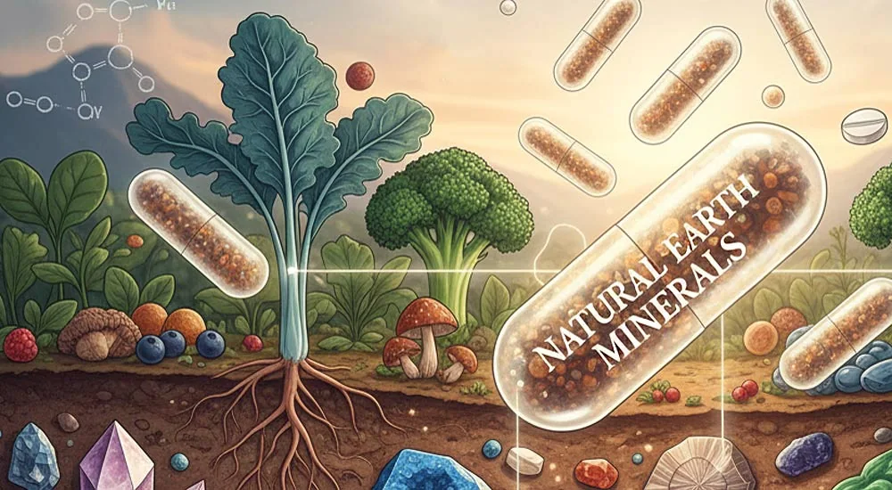

Tipps zur Aufnahme von Mineralstoffen über Ernährung und Nahrungsergänzung

Mineralstoffe sind essentielle Nährstoffe für deinen Körper, die eine wesentliche Rolle spielen. Mineralstoffe sind die unsichtbaren Helden, die von vielen Menschen vernachlässigt und übersehen werden. Sie sind überall in unserer Natur, in unserer Nahrung, und in unserem Körper.
In diesem Artikel erhältst du einen Einblick in die Welt der Mineralien, und wir geben dir Tipps zur Aufnahme von Mineralstoffen über Ernährung und Nahrungsergänzung, sodass du deinen Bedarf optimal decken kannst.
Was sind Mineralstoffe?
Mineralstoffe sind anorganische Substanzen, die unser Körper braucht, sie aber nicht selbst bilden kann (essentiell). Also müssen sie permanent über die Nahrung aufgenommen werden. Mineralstoffe lassen sich grob in zwei Kategorien einteilen: Mengenelemente und Spurenelemente.
Mengenelemente wie Kalzium, Magnesium und Kalium werden in größeren Mengen benötigt, während Spurenelemente wie Zink und Eisen nur in geringen Mengen erforderlich sind, jedoch ebenso wichtig sind.
Vermutlich sind die viele Mineralien und Spurenelemente bereits bekannt und du weißt, wie wichtig sie für deinen Körper sind.
Obwohl das Wissen über Mineralstoffe überall zugänglich und gut kommuniziert ist, haben wir durch unsere Arbeit als unabhängige FitLine Vertriebspartner in vielen Jahren Kontakt mit Menschen die Erfahrung gemacht, dass sich nur wenige um eine optimale Mineralienaufnahme Gedanken machen, bzw. diese fast immer vernachlässigt wird.
Um das Bewusstsein dafür ein wenig mehr zu schärfen, haben wir dir diesen Artikel erstellt.
Übersicht über wichtige Mengen- und Spurenlemente
Hier findest du eine kompakte Übersicht über die wichtigsten Mengen- und Spurenelemente für den menschlichen Körper, wie sie ganz natürlich in unserer Nahrung vorkommen:
Mengenelemente (Makrominerale)
Diese Mineralstoffe brauchst du vergleichsweise in größeren Mengen. Dazu haben wir angegeben, welche Lebensmittel besonders reich an diesen Mineralstoffen sind:
- Calcium (Ca) In: Milchprodukte, Käse, Joghurt, Grünkohl, Brokkoli, Mandeln, Sesam
- Phosphor (P) In: Fleisch, Fisch, Milchprodukte, Hülsenfrüchte, Nüsse, Vollkornprodukte
- Magnesium (Mg) In: Nüsse, Kerne, Vollkorn, Hülsenfrüchte, grünes Gemüse, Kakao
- Natrium (Na) In: Speisesalz, Brot, Käse, Wurstwaren, Fertigprodukte
- Kalium (K) In: Bananen, Kartoffeln, Gemüse, Hülsenfrüchte, Trockenfrüchte, Nüsse
- Chlorid (Cl) In: Speisesalz, Brot, Wurst, Käse, viele verarbeitete Lebensmittel
- Schwefel (S) In: Eiweißreiche Essen (Eier, Fleisch, Fisch, Milchprodukte), Hülsenfrüchte, Nüsse, Zwiebelgewächse/Lauchgemüse etc.
Spurenelemente (Mikrominerale)
Diese brauchst du nur in sehr kleinen Mengen, sie sind aber trotzdem nicht weniger wichtig:
- Eisen (Fe) In Lebensmitteln: Fleisch, Leber, Hülsenfrüchte, Hirse, Hafer, Kürbiskerne, grünes Blattgemüse, Spinat, Brennnessel
- Zink (Zn) In Lebensmitteln: Fleisch, Käse, Eier, Haferflocken, Nüsse, Kerne, Hülsenfrüchte
- Kupfer (Cu) In Lebensmitteln: Nüsse, Samen, Vollkornprodukte, Hirse, Leber, Kakao
- Mangan (Mn) In Lebensmitteln: Vollkorngetreide, Nüsse, Hülsenfrüchte, Tee
- Jod (I) In Lebensmitteln: Seefisch, Meeresfrüchte, Algen, einige Milchprodukte
- Fluorid (F) In Lebensmitteln: schwarzer und grüner Tee, Meeresfisch, Mineralwasser (je nach Quelle), Sojabohnen
- Selen (Se) In Lebensmitteln: Paranüsse, Fisch, Fleisch, Eier, Vollkornprodukte
- Chrom (Cr) In Lebensmitteln: Vollkornprodukte, Fleisch, Käse, einige Gemüsesorten
- Molybdän (Mo) In Lebensmitteln: Hülsenfrüchte, Getreide, Nüsse
Weitere wichtige Ultraspurenelemente
In der Natur kommen in unserer pflanzlichen Nahrung noch viele weitere Elemente in kleinsten Mengen von Milligramm vor, die meistens in Zusammenhang mit unserer Mineralstoffversorgung nicht thematisiert werden. Dazu gehören viele Metalle, die in größeren Mengen, wie auch in einer nicht in Pflanzen gebundenen Form, sogar giftig für uns sind. Dazu gehören z. B. Arsen, Gold, Silber, Blei, Zinn, Lithium usw. Hierbei ist die Bedeutung für den Menschen teilweise noch nicht vollständig geklärt, einige gelten aber bereits als potenziell wichtig:
- Nickel (Ni) in Vollkorn, Nüssen, Hülsenfrüchten
- Silizium (Si) in Vollkorn, Hirse, Bier, manchen Gemüsesorten
- Vanadium (V) in Pilzen, Meeresfrüchten, einigen Getreiden
- Zinn (Sn) in geringen Mengen in verschiedenen Lebensmitteln
- Bor (B) in Obst, Gemüse, Nüssen, Wein
- Kobalt (Co) über Vitamin B12-haltige Lebensmittel wie Fleisch, Fisch, Eier, Milchprodukte
Interessant zu wissen ist, dass diese Elemente in unserer gezüchteten Supermarktnahrung z. T. gar nicht mehr vorkommen. Verzehren wir aber Wildkräuter, die wir in möglichst unberührter Natur sammeln, sind diese Elemente enthalten. Dies ist ein Grund mehr, Pflanzen aus der Natur im Essen zu verwenden, wann immer möglich.
PS: Wildkräuter liefern in der Regel auch um ein Vielfaches mehr an Mineralstoffen (Mengenelemente) als unsere Supermarkt-Nahrung. So enthalten Brennnesseln z. B. mehr als doppelt so viel Eisen, und mehr als 3x so viel Calcium wie Grünkohl. Und bei diesem Vergleich haben wir schon eine Gemüsesorte genutzt, die relativ hochwertig ist und von vielen Menschen kaum gegessen wird.
Warum nehmen heute viele Menschen zu wenig Mineralien über die Nahrung auf?
Viele Menschen haben eine suboptimale Aufnahme von Mineralstoffen und sind sich dessen aber nicht bewusst. Dies kann unterschiedliche Ursachen haben:
1. Die Herausforderung der Mineralstoffaufnahme: viele Menschen ernähren sich minderwertig
In der heutigen Ernährung fehlt es häufig an Qualität, Vielfalt und Frische. Viele verarbeitete Lebensmittel sind arm an Mineralstoffen und enthalten oft nur wenige natürliche Nährstoffe.
Sei einmal ehrlich zu dir selbst: wie häufig isst du Nahrung, die wirklich reich an Mineralstoffen ist (wie frisches Gemüse, mineralreiches Obst, vollwertige Getreidesorten wie Hirse, Wildkräuter …), und im Vergleich dazu: wie viele nährstoffarme Nahrungsmittel bzw. Genussmittel kommen auf deinen Tisch?
Liste von Mineralstoffräubern: Nahrungs- und Genussmittel, die kaum oder keine Mineralstoffe enthalten
Hier hast du eine Liste von typischen „Mineralstoffräubern“, also Lebens- und Genussmitteln, die selbst kaum Mineralstoffe liefern und oft sogar dafür sorgen, dass dein Körper mehr ausgleichen muss, als er bekommt. Dadurch entsteht ein „Minus“ an Mineralstoffen!
a). Unnatürliche, zuckerhaltige Lebensmittel, Getränke und Süßigkeiten (mit gewöhnlichem Haushaltszucker)
Typische Beispiele:
- Süßigkeiten (Bonbons, Gummibärchen, Schokolade mit viel Zucker)
- Kuchen, Teilchen, Gebäck mit Auszugsmehl und gewöhnlichem Zucker
- Gezuckerte Frühstückscerealien
- Süße Fertigdesserts
- Limonaden, Cola, Energy-Drinks
- Eistee aus der Flasche
- Fertig-Säfte mit viel Zuckerzusatz
- Süße Kaffeegetränke (Latte mit Sirup, Eiskaffee, Fertigkaffee aus dem Kühlregal)
Warum „Mineralstoffräuber“?
- Viel Zucker, kaum wertvolle Mineralstoffe
- Können den Bedarf an Magnesium, Zink und B-Vitaminen erhöhen
- Sättigen kurz, ohne wirklich zur Nährstoffversorgung beizutragen
- „Leere“ Kalorien: viel Zucker, so gut wie keine Mineralstoffe
- Können den Blutzucker stark schwanken lassen. Auch das kostet Energie
b). Weißmehlprodukte
Typische Beispiele:
- Weizenbrötchen, Toast, Baguette
- Helle Pasta
- Kekse, Cracker aus Weißmehl
- Viele Fertigpizzen mit hellem Boden
Warum „Mineralstoffräuber“?
- Beim Ausmahlen gehen viele Mineralstoffe (z. B. Magnesium, Zink) verloren
- Machen nur kurzzeitig satt, ohne nennenswerte Mineralstoffe, Ballaststoffe und andere Nährstoffe zu liefern
c). Starke Alkoholika und häufiger Alkoholkonsum
Typische Beispiele:
- Hochprozentiger Alkohol (Schnaps, Liköre, Spirituosen)
- Viel Bier oder Wein über den Tag / die Woche verteilt
Warum „Mineralstoffräuber“?
- Alkohol kann die Ausscheidung von Mineralstoffen wie Magnesium und Zink erhöhen
- Liefert Kalorien, aber praktisch keine Mineralstoffe
d). Stark verarbeitete Fertigprodukte
Typische Beispiele:
- Tütensuppen, Fertigsoßen
- Tiefkühl-Fertiggerichte (Lasagne, Aufläufe, Snacks)
- Instant-Nudeln, 5-Minuten-Terrinen
- Chips, Flips, Salzstangen, Kräcker
Warum „Mineralstoffräuber“?
- Oft reich an Salz, Zucker, ungesunden Fetten
- Der natürliche Gehalt an Mineralstoffen ist durch Verarbeitung meist deutlich reduziert
e). Fast Food
Typische Beispiele:
- Burger, Pommes, Chicken Nuggets
- Frittierte Snacks
- Döner & Co. mit viel Weißbrot und Soße (wenig Gemüse)
Warum „Mineralstoffräuber“?
- Viel Fett, Salz, einfache Kohlenhydrate, wenig frische, hochwertige Lebensmittel:
- Das Verhältnis von Energie zu Mineralstoffen ist ungünstig
f). Starker Kaffee- und Teekonsum (je nach Menge)
Typische Beispiele:
- Mehrere Tassen starker Kaffee täglich
- Schwarzer Tee in großen Mengen
Warum „Mineralstoffräuber“?
- Koffein kann die Ausscheidung bestimmter Mineralstoffe (z. B. Magnesium) erhöhen
- Kaffee selbst hat nur sehr begrenzt Mineralstoffgehalt
(Ein bis zwei Tassen am Tag sind für die meisten Menschen unproblematisch, es geht hier um den häufigen, hohen Konsum.)
g). Light- und Diätprodukte ohne Nährstoffdichte
Typische Beispiele:
- Light-Limonaden (null Zucker, null Mineralstoffe)
- Diät-Snacks, die nur auf „kalorienarm“ ausgelegt sind
- Protein-Riegel mit viel Süßstoff und kaum hochwertigen Zutaten
Warum „Mineralstoffräuber“?
- Füllen den Magen oder geben ein „gesundes“ Gefühl, ohne Mineralstoffe zu liefern
- Können echte, mineralstoffreiche Mahlzeiten verdrängen
Welche Lebensmittel bringen ein Plus bei der Bilanz deiner Mineralienaufnahme?
Hier findest du eine Liste von Lebensmitteln, die deinem Körper wirklich viele Mineralien liefern.
Beachte: einige eiweißreiche Lebensmittel liefern zwar auch viele Mineralstoffe, bilden aber bei der Verstoffwechselung viele Säuren (Fisch, Nüsse, Käse usw.) Daher sieht eine „Mineralstoff-Plus“-Liste so aus:
Lebensmittel mit Mineralstoff-Plus:
- Grünes Blattgemüse und Wildkräuter: Brennnessel, Feldsalat, Rucola, Kopfsalat etc.
- Kohlgemüse: Brokkoli, Grünkohl, Blumenkohl, Kohlrabi…
- Weiteres Gemüse: Paprika, Fenchel, Gurke, Tomaten, Zucchini, Rote Bete, Karotten…
- Kartoffeln & Süßkartoffeln als sehr gute Kalium- und Mineralstofflieferanten
- Obst (eher säurearmes): Beeren, Äpfel, Birnen, Trauben
- Trockenfrüchte: Aprikosen, Feigen, Datteln, Pflaumen
- Frische Kräuter: Petersilie, Schnittlauch, Basilikum, Koriander
- Sprossen: z. B. Alfalfasprossen, Brokkolisprossen
- Mineralstoffreiches Wasser und Kräutertee
2. Verlust von Mineralstoffen bei der Zubereitung von Mahlzeiten
Auch die Zubereitung deiner Mahlzeiten kann übrigens einen großen Einfluss auf die Nährstoffaufnahmen haben.
Bei Mineralstoffen geht es dabei vor allem um den Verlust von Mineralien über Kochwasser. Nicht selten kochen oder dünsten Menschen ihr Gemüse und gießen es dann ab. Das wird z. B. häufig bei Kartoffeln gemacht. Hast du schon einmal darüber nachgedacht, dass du damit wertvolle Mineralstoffe in deinen Abfluss gießt und das Essen noch nährstoffärmer wird, als es sowieso schon ist?
Indem du nicht nur auf das „Was“, sondern auch auf das „Wie“ der Zubereitung achtest, kannst du deine Nährstoffaufnahme weiter optimieren.
3. Gründe für den Rückgang von Mineralstoffen in der Nahrung
Zusätzlich zu der Tatsache, dass sich viele Menschen mineralienarm ernähren, liefert frisches Gemüse weniger Mineralstoffe als noch zu Zeiten unserer Großeltern. Hier sind zentrale Gründe, warum selbst frisches und hochwertiges Essen heute oft weniger Mineralstoffe enthalten als früher:
- Ausgelaugte Böden durch intensive Landwirtschaft: Durch Monokulturen und hohe Erträge werden Böden stark beansprucht. Wenn nicht konsequent mit organischem Material und sinnvoller Fruchtfolge gearbeitet wird, sinkt der Mineralstoffgehalt im Boden, und damit auch in den Pflanzen.
- Einsatz von leicht löslichen Kunstdüngern: Kunstdünger liefert hauptsächlich Stickstoff, Phosphor und Kalium. Spurenelemente und eine ausgewogene Bodenbiologie bleiben oft auf der Strecke, wodurch die Pflanzen zwar schnell wachsen, aber nicht unbedingt mineralstoffreich sind.
- Züchtung auf Ertrag, Optik und Haltbarkeit statt auf Nährstoffdichte: Viele moderne Sorten sind auf Größe, schöne Farbe, Süße und Transportfähigkeit gezüchtet und nicht auf maximalen Mineralstoffgehalt. Das kann die Nährstoffdichte pro Gramm Lebensmittel reduzieren.
- Unreife Ernte und lange Transportwege: Obst und Gemüse wird oft geerntet, bevor es voll ausgereift ist, damit es den Handel und Transport übersteht. Ein Teil der Mineralstoffe und sekundären Pflanzenstoffe bildet sich aber erst in der letzten Reifungsphase an der Pflanze.
- Verarbeitungsschritte direkt nach der Ernte: Waschen, Schälen, Schneiden, Blanchieren oder Vakuumverpacken können Mineralstoffverluste verursachen, besonders wenn viel Oberfläche entsteht und Wasser im Spiel ist.
- Veränderte Tierhaltung und Fütterung: Tiere, die wenig Weidegang haben und hauptsächlich mit Kraftfutter versorgt werden, liefern andere Nährstoffprofile als Tiere, die sich von vielfältigen Pflanzen auf der Weide ernähren. Das beeinflusst auch Mineralstoffe in Milch, Eiern und Fleisch.
4. Mögliche Gründe für einen erhöhten Bedarf an Mineralstoffen
Jeder Mensch hat unterschiedliche Bedürfnisse basierend auf Alter, Geschlecht, Aktivitätslevel, Lebensumständen und Zielen. Besondere Lebensumstände wie beispielsweise starker Stress, Schwangerschaft, erhöhte körperliche Belastung wie auch intensiver Sport können dazu führen, dass der Nährstoffbedarf steigt.
Tipps, wie du ausreichend Mineralstoffe über deine Ernährung aufnimmst
Eine ausgewogene Ernährung ist entscheidend, um ausreichend Mineralstoffe aufzunehmen!
In der heutigen schnelllebigen Zeit ist es oft eine Herausforderung, alle notwendigen Nährstoffe über die Nahrung zu beziehen. Daher ist es wichtig, sich bewusst mit der eigenen Ernährung auseinanderzusetzen und gezielt mineralstoffreiche Lebensmittel in den Speiseplan zu integrieren.
Um deinen Bedarf zu decken, ist es wichtig, auf eine abwechslungsreiche Kost zu achten, die reich an Obst, Gemüse, Vollkornprodukten und hochwertigen Proteinquellen ist. Diese kannst du bereits den Listen weiter oben entnehmen.
Diese Lebensmittel liefern nicht nur die nötigen Mineralstoffe, sondern auch Vitamine und andere wichtige Nährstoffe, die dein Körper benötigt!
Beginnen wir mit den Mengenelementen: Kalzium, Magnesium, Natrium und Kalium. Kalzium findest du vor allem in Milchprodukten wie Joghurt und Käse, aber auch in grünem Gemüse wie Spinat und Brokkoli. Magnesium ist in Nüssen, Samen und Vollkornprodukten enthalten. Eine Kombination aus diesen Lebensmitteln regelmäßig zu essen kann dazu beitragen, dass du deinen täglichen Bedarf spielend leicht deckst.
Ein weiterer wichtiger Mineralstoff ist Eisen, der vor allem in rotem Fleisch, Fisch und Hülsenfrüchten vorkommt. Vegetarier und Veganer können ihren Eisenbedarf durch den Verzehr von Linsen, Kichererbsen, Hirse, Wildkräutern und Tofu perfekt decken.
Zink ist ein Spurenelement, das ebenfalls nicht fehlen darf. Es ist in Fleisch, Meeresfrüchten und Vollkornprodukten enthalten.
Auch hier gilt: Vielfalt ist der Schlüssel!
Je abwechslungsreicher deine Ernährung ist, desto besser kannst du deinen Mineralstoffbedarf abdecken.
Praktische Tipps zur Verbesserung deiner Mineralstoffzufuhr
Um sicherzustellen, dass du genügend Mineralstoffe aufnimmst, kannst du einige einfache Änderungen in deiner Ernährung vornehmen.
Achte darauf, täglich eine Vielzahl von buntem Obst und Gemüse zu essen. Je bunter dein Teller, desto besser! Insbesondere dunkelgrünes Gemüse wie Grünkohl oder Brokkoli ist reich an Kalzium und Magnesium.
Auch Nüsse und Samen sind hervorragende Quellen für Zink und Magnesium. Vollkornprodukte liefern dir wichtige B-Vitamine sowie Mineralstoffe wie Eisen und Magnesium.
Überlege dir auch, wie du deine Mahlzeiten zubereitest: Dämpfen oder Dünsten erhält mehr Nährstoffe als das Kochen in viel Wasser.
Um das Beste aus deiner Ernährung herauszuholen, ist es wichtig, auch auf die Qualität der Lebensmittel zu achten.
Der Verzehr von saisonalem und regionalem Obst und Gemüse kann nicht nur dazu beitragen, dass die Nährstoffdichte hoch bleibt, sondern unterstützt zudem nachhaltige Landwirtschaft und schont die Umwelt.
Zudem enthalten frische Produkte oft mehr Vitamine und Mineralstoffe, da sie kürzer transportiert und weniger verarbeitet werden.
Du kannst deine Ernährungsweise weiter optimieren, indem du gezielt Bio-Produkte in deine Einkaufsliste aufnimmst.
Diese Produkte werden ohne den Einsatz synthetischer Pestizide oder Düngemittel angebaut und bieten häufig einen höheren Nährstoffgehalt. Ein weiterer Vorteil ist, dass die Verwendung von biologischen Lebensmitteln auch die Biodiversität fördert und hilft, gesunde Böden zu bewahren.
Darüber hinaus lohnt es sich, wenn möglich, eigene Gartenpflanzen anzubauen oder in Gemeinschaftsgärten aktiv zu werden. So hast du volles Vertrauen in die Herkunft deiner Lebensmittel und kannst den direkten Kontakt zur Natur genießen.
Tipps auf einen Blick für mehr Mineralien in deiner Nahrung:
- Verzehre zu JEDER Mahlzeit frische Gemüse und/oder Obst!
- Kaufe vor allem saisonale und Gemüse und Obst in Bio-Qualität.
- Setze bei Snacks öfter auf Nüsse, Kerne, Hülsenfrüchte, Gemüse und Obst statt Knabberzeug und Süßigkeiten. Hier stecken echte Mineralstoff-Booster drin.
- Iss weniger starke Mineralstoffräuber (Süßigkeiten, Genussmittel, Kaffee).
- Tausche Weißmehl so oft wie möglich gegen Vollkorngetreideprodukte aus.
- Nutze viel hochwertige Pseudogetreide wie Hirse und Amaranth.
- Trink öfter Wasser oder ungesüßten Kräutertee statt Softdrinks, Kaffee oder Alkohol.
- Achte auf schonende Zubereitung und gieße kein Kochwasser weg!
- Wenn möglich: baue selbst Gemüse/Salate im Garten an und sammle Wildkräuter.
Schaffe mehr Bewusstsein über deine Ernährungsgewohnheiten
Indem du dokumentierst, was du isst und trinkst, erhältst du einen Überblick über deine Ernährung und kannst gezielt Anpassungen vornehmen. Hierbei ist es ratsam, auch die Portionsgrößen sowie die Zubereitungsarten zu berücksichtigen. So kannst du sicherstellen, dass du nicht nur qualitativ hochwertige Nahrungsmittel wählst, sondern auch die Nährstoffe optimal ausschöpfst.
Oft haben wir schon festgestellt, dass bei selbst ernährungsbewussten Menschen Wissenslücken bestehen und dadurch wesentliche Punkte bei den eigenen Gewohnheiten übersehen werden. Klar, in der Schule gibt es kein Fach „Ernährung“. Darum kann sich der Austausch mit einem Ernährungsberater lohnen. Die unabhängigen FitLine Berater in unserem Team sind Fachleute in diesem Bereich und stehen dir auch kostenlos für eine Einschätzung zur Seite.
Experten können dir auch maßgeschneiderte Ratschläge geben, die auf deine individuellen Bedürfnisse und deine persönlichen Ernährungsgewohnheiten abgestimmt sind. Sie können dir dabei helfen, einen langfristigen Ernährungsplan zu erstellen.
Wann Nahrungsergänzungsmittel sinnvoll sein können
In manchen Fällen können Nahrungsergänzungsmittel sinnvoll sein, um den Bedarf an Mineralstoffen zu decken.
Du kannst dir einmal folgende Fragen stellen, um deine Mineralstoffaufnahme einzuschätzen:
- Wie oft isst du frisches Gemüse? Schaffst du die mindestens 5 Portionen, die pro Tag empfohlen sind, um wichtige Mineralien und Vitamine aufzunehmen?
- Wie oft verzehrst oder trinkst du die oben aufgeführten „Mineralstoff-Räuber“?
- Hast du viel Stress und/oder machst viel Sport?
- In welchem Maß bist du bereit, oder ist es dir möglich, diese Gewohnheiten zu verändern?
- Hast du bestimmte Unverträglichkeiten, sodass du ggf. eine oder mehrere Nährstoffgruppen gar nicht isst? Dadurch können natürlich große Nährstofflücken entstehen, die einen Teufelskreis nach sich ziehen.
Wenn du das Gefühl hast, dass du nicht ausreichend Mineralstoffe über die Nahrung aufnimmst oder spezielle Herausforderungen hast, kann es sinnvoll sein, zusätzlich zu supplementieren.
Dann können hochwertige Nahrungsergänzungsmittel wie das Optimal-Set genutzt werden. Sie bieten dir eine perfekte Kombination aus essentiellen und anderen wichtigen Nährstoffen in einer leckeren Form.
Das Abendgetränk Resto Mineralien, welches in dem Set enthalten ist, liefert dir eine hochwertige und vielfältige Mischung wichtiger Mineralstoffe und Spurenelemente, die dein Körper benötigt.
Das Nährstofftransportkonzept mit den dahinterstehenden, patentierte Technologien machen das leckere Getränk einzigartig und besonders innovativ. Diese Produkte sind so konzipiert, dass die Bioverfügbarkeit optimal ist, sodass die erforderlichen Mineralstoffe auch gut aufgenommen werden können.
Du kannst Resto auch ohne die anderen Produkte des Optimal-Sets nutzen. Eine mögliche Ergänzung für eine zusätzliche Mineralstoffaufnahme ist außerdem unser Basen Plus.
Wenn du dir unsicher bist, welche Produkte für dich geeignet sind oder wie du deine Ernährung am besten gestalten kannst, zögere nicht, uns zu kontaktieren! Unsere kostenlose Beratung steht dir jederzeit zur Verfügung und hilft dir dabei, die besten Entscheidungen zu treffen. Wir unterstützen dich dabei, den perfekten Plan zu entwickeln, der auf deine individuellen Bedürfnisse abgestimmt ist. (Wir sind unabhängige Vertriebspartner der PM-International / FitLine Produkte)
Es ist wichtig zu beachten, dass eine ausgewogene Ernährung und die gezielte Einnahme von Nahrungsergänzungsmitteln Hand in Hand gehen sollten. Nahrungsergänzungsmittel können nie eine hochwertige und ausgewogene Ernährung ersetzen. Du solltest dich daher auf jedem Fall auch mit deinem Essen beschäftigen.
Welche Mineralstoff-Nahrungsergänzungsmittel du nicht nutzen solltest
Mineralstoffe arbeiten oft synergistisch miteinander und können ihre Wirkung gegenseitig beeinflussen. So ist beispielsweise das Verhältnis von Calcium zu Magnesium entscheidend für eine optimale Aufnahme und Verwertung im Körper.
Leider machen viele Menschen genau an dieser Stelle Fehler, wenn sie Nahrungsergänzungsmittel nutzen. Enorm viele Menschen verwenden isolierte Mineralien: wie allein Magnesium, oder die Brausetablette mit Calcium aus der Drogerie. Calcium zu Magnesium sollten jedoch immer gemeinsam und im richtigen Verhältnis eingenommen werden. Dies ist nur eines von vielen Beispielen, und gilt ebenso für Vitamine.
Wenn eine Mineralstoff–Nahrungsergänzung für dich sinnvoll sein soll, nutze bitte nur wissenschaftlich fundiert aufgestellte Rezepturen, mit vielen Mineralien in korrekter Kombination und Menge, die wasserlöslich sind und getrunken werden!
Häufige Fragen zur Aufnahme von Mineralstoffen
Reduziere oder vermeide ganz Süßigkeiten, Desserts, Kuchen und Gebäck sowie höhere Mengen an Kaffee. Probiere stattdessen aus, Süßigkeiten und Kuchen aus natürlichen, hochwertigen Zutaten herzustellen: z. B. mit Datteln oder Bananen zu süßen und helles Auszugsmehl durch Nussmehle zu ersetzen. Diese Früchte enthalten zwar auch viel Zucker, jedoch gleichzeitig wertvolle Mineralien und Vitamine! Die Möglichkeiten, sich besser zu ernähren, ohne auf Genuss zu verzichten, sind vielfältig.
Du solltest mehr Gemüse und Salate essen: frisch, abwechslungsreich und möglichst schonend zubereitet. Wir bekommen häufig mit, dass zu wenig Gemüse gegessen wird, manchmal sogar kaum! Gemüse ist jedoch in vielerlei Hinsicht extrem wichtig. Darunter auch für eine gute Mineralstoff-Aufnahme! Obstsorten wie Bananen, Datteln und Feigen enthalten auch sehr viele Mineralien und hochwertige Nährstoffe.
Wenn die Mineralienaufnahme über die Nahrung zu gering ist, wird dein Körper die Mineralstoffe, die er akut benötigt, aus Körperstrukturen abziehen, die viele Mineralien enthalten. Z. B. aus den Knochen.
Wenn du eine gute Mineralstoff-Nahrungsergänzung verwendest, die keine Hochdosierungen enthält und vielseitig Mineralien und Spurenelemente in den richtigen Verhältnissen zur Verfügung stellt, wie das unser Resto Mineraliengetränk tut, kannst du dieses Produkt täglich und langfristig einnehmen. Mineralien werden nicht im Körper in irgendwelchen Depots gespeichert, sondern werden beim Mangel aus wichtigen Körperstrukturen entzogen. Sie werden täglich gebraucht und verbraucht, sodass du auch täglich darauf achten solltest, dich ausreichend zu versorgen: über eine hochwertige Ernährung und im Bedarfsfall zusätzlich mit Nahrungsergänzung.